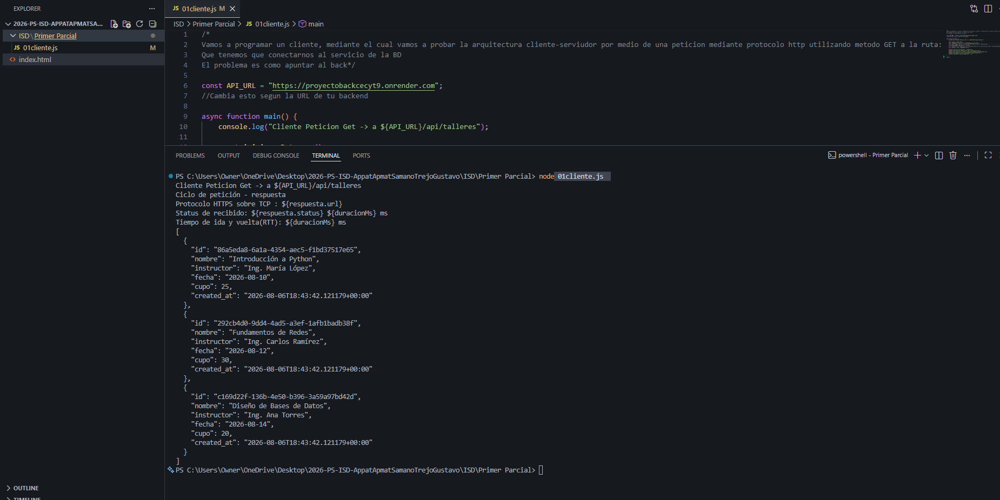

Se estableció una comunicación cliente-servidor exitosa mediante una petición HTTP GET utilizando fetch() hacia el backend
Se conecto correctamente al servicio y a la base de datos, obteniendo el estatus de respuesta y midiendo el tiempo de ida y vuelta (RTT)
regresa los datos en formato JSON con la información de la pagina (que son los tallerse)
